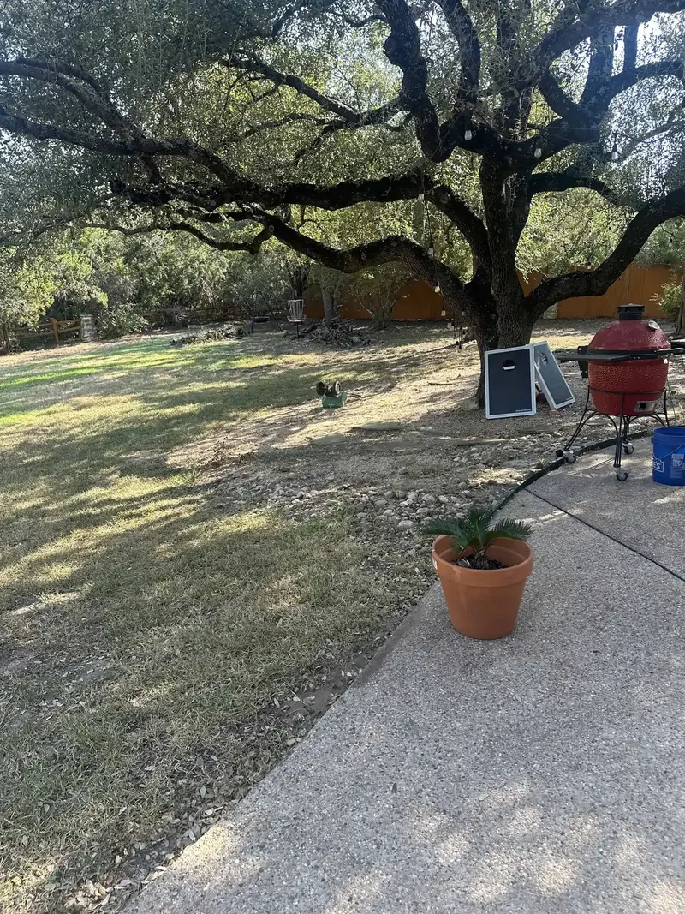
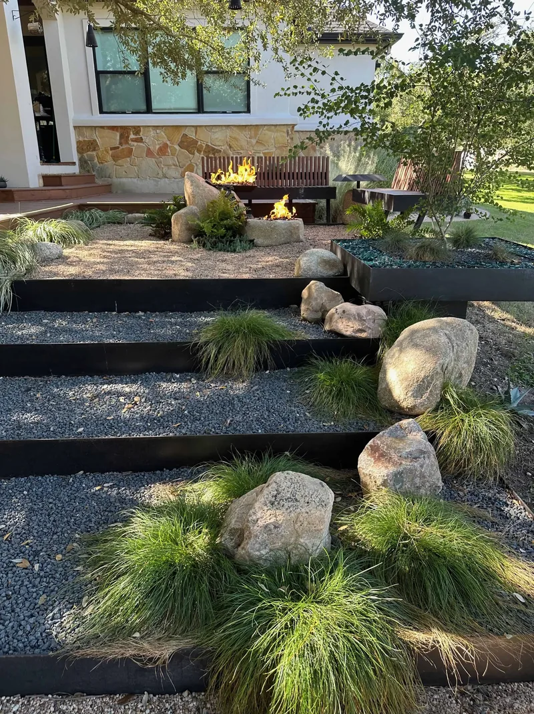
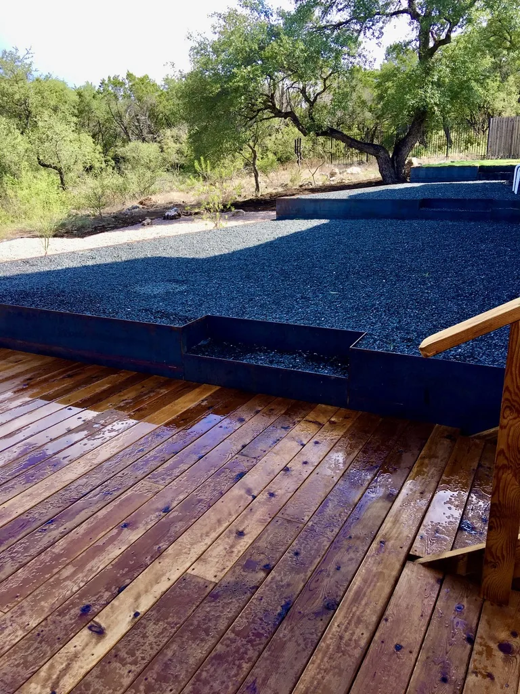

Red Agave Landscape is a drainage company in Austin, TX that starts every job by tracing the water: where it enters the lot, where it sits, and where it has to leave. Then we draw the fix on a CAD plan and build it with our own crew: French drains, channel drains, catch basins, swales, dry creek beds, and steel terraces on slopes. The photos are from a slope we terraced in Circle C and a sloped lot in Bee Cave.


Why Do Drainage Quotes in Austin Disagree?
Because the right fix comes from two things: the ground, and the path the water takes across it. A quote written before anyone has traced both is a guess.
Start with the ground. Texas A&M AgriLife Extension in Travis County describes two different soils in the Austin area. East of I-35, Blackland Prairie clays shrink and swell with moisture and absorb water very slowly. West of I-35, the Edwards Plateau has thin soil over limestone that is prone to runoff. The same storm does different things on each side:
- Clay, east: water sits on the surface. Collect it and move it: regrade away from the house, set catch basins at low spots, and run solid pipe to a proper outlet.
- Limestone, west: water runs fast across the surface. Carry it in swales, dry creek beds, and channel drains to an outlet.
And the storms are heavy: the City of Austin says Austin is in the heart of Flash Flood Alley.
What Should an Austin Drainage Company Check Before It Quotes?
The water, on your lot. Our assessment is a free on-site visit, and we look at four things:
- Grade: which way the ground falls, starting beside the house
- Downspouts: where the roof water lands and where it goes next
- Soil: clay that holds water, or thin soil over limestone that sheds it
- The path: where water enters the lot, where it sits, and where it leaves
When we can, we visit during or after a rain and watch where the water goes.
The grade beside the house has a number. The International Residential Code, in section R401.3, calls for the ground to fall at least 6 inches within the first 10 feet from the foundation.
On a hillside, the path starts next door: rain comes in from the lot above and leaves toward the lot below. In Great Hills, it heads downhill toward creeks like the ones in Great Hills Park. So a hillside plan starts with three questions: where the water enters, where it has to pass the house, and where it can slow down and soak in.
What Does a Real Drainage Plan Show?
A real plan is specific enough to draw. A guess is a product name and a length. Ask to see four things:
- The source: the roof, the slope above, or a low spot
- The route: every run of pipe and every swale
- The slope: the fall on each run. Our French drains are set at a minimum 1% slope.
- The outlet: daylight, a pop-up emitter away from the house, or a dry creek bed
At Red Agave the system goes on the CAD plan with every run, slope, and outlet, so the drainage fits the patios, beds, and trees around it. Near trees, the runs are routed around the root zones.
We use both rigid PVC and corrugated pipe and pick by the run: rigid PVC holds its slope and can be cleaned out, and corrugated pipe bends around curves.
What Does the Work Look Like on a Slope?
On a slope, the drainage and the structure are one plan. Swales and dry creek beds carry water across the surface. Where it cannot stay on top, French drains, catch basins, and channel drains carry it in pipe. Steel walls then cut the slope into level terraces of gravel or planting, and a deck takes over where the grade drops too fast to fill.
Our Circle C project started as the yard in the first photo: bare ground and a live oak, on a slope that dropped away from the house with nothing to hold it. We cut it into five planes: three steel terraces that step down through gravel and boulders, and two deck levels off the house. Quarter-inch steel edges every transition. AgriLife lists terraces among the measures for runoff on the thin soils west of I-35.

Behind every steel retaining wall, a 4-inch perforated drain pipe wrapped in filter fabric sits at the base, with at least 12 inches of clean drainage gravel between the pipe and the wall, so water never builds pressure against the steel. See our steel retaining walls and custom decks.
What Do We Install?
- French drains: perforated pipe in a gravel trench wrapped in non-woven geotextile
- Channel drains: a grated channel set into a patio, driveway, or pool deck
- Catch basins: a grated box at a low spot, feeding solid pipe to an outlet
- Regrading and swales: ground reshaped to fall away from the house
- Downspout routing: buried solid pipe that releases roof water away from the foundation
- Dry creek beds: rock-lined channels that carry runoff in a storm
Drainage is our first phase of construction. Water gets designed before the patio, the planting, or the lighting, because everything built on top relies on it.
Our drainage service page covers each system, our drainage engineering guide shows how they go together, and our drainage cost guide covers pricing.
Who Answers for a Drain You Cannot See?
Drainage disappears under gravel, sod, and planting. With Red Agave you have three things:
- One company: the system is designed by Red Agave and built by our own crew
- A drawn record: the CAD plan shows every run, slope, and outlet, so you know what is underground and where
- A checked slope: the grade is laser-verified on every run
The outlet is part of the answer too. Texas Water Code section 11.086 bars anyone from diverting or impounding the natural flow of surface water in a way that damages another person’s property, and the owner who is harmed can recover damages. A drainage plan has to end at a proper outlet, not at the property line.
Every Red Agave project starts with a free consultation, and the CAD plan is included. Tell us where the water goes when it rains, and we design the yard around it.
Questions We Hear
What does a drainage company look at first?
The water on your lot. Red Agave starts with a free on-site visit and looks at grade, downspouts, soil, and where water enters, sits, and leaves.
Do you install French drains in Austin?
Yes. Our French drains are a perforated pipe in a gravel trench wrapped in non-woven geotextile, set at a minimum 1% slope and run to a real outlet.
Do you use PVC or corrugated drain pipe?
Both. Rigid PVC holds its slope and can be cleaned out, and corrugated pipe bends around curves. We pick by the run.
How do you fix drainage on a sloped lot?
We start with where the water comes from and where it has to go. Swales and dry creek beds carry it across the surface, and French drains, catch basins, and channel drains carry it in pipe to a proper outlet.
Is the drainage plan included?
Yes. The consultation is free and the CAD plan is included. It shows every run, slope, and outlet before our own crew starts digging.